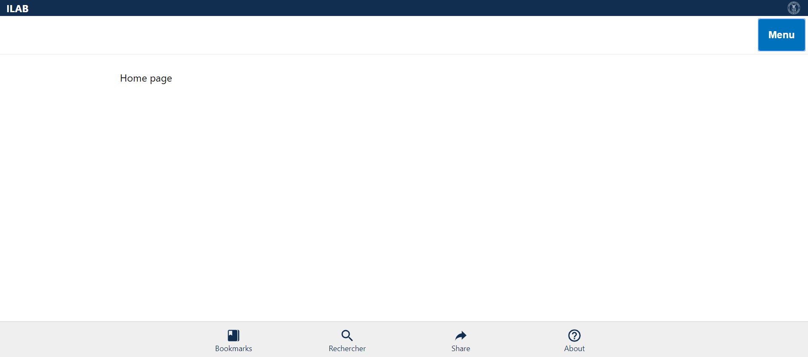
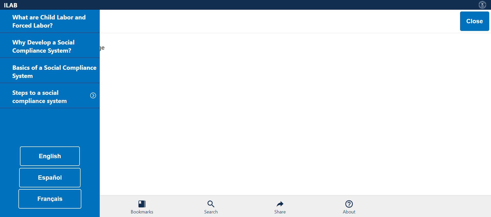
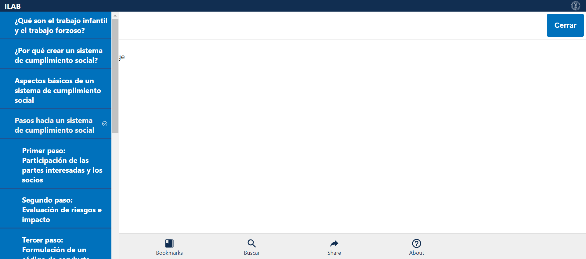
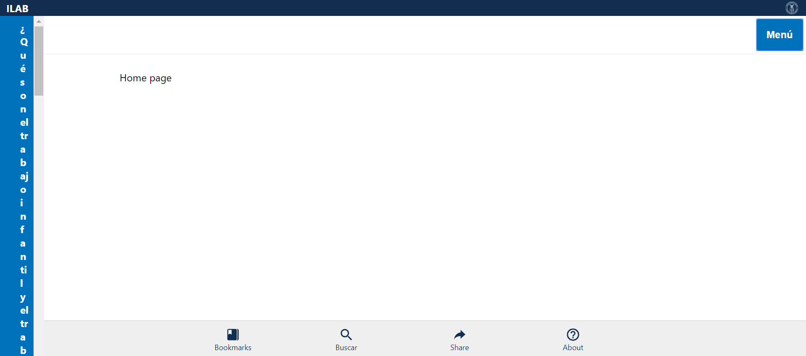
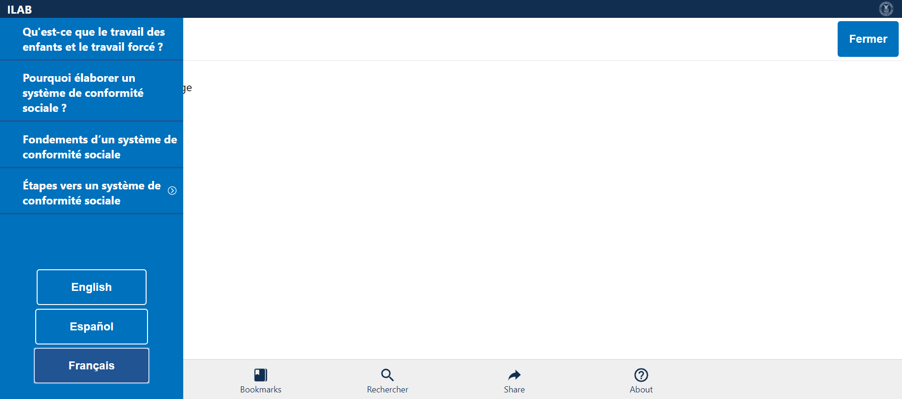
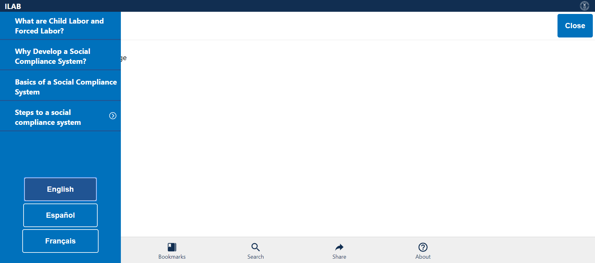

Tests
10 test(s) passed
0 test(s) failed, 0 others
Steps
204 step(s) passed
0 step(s) failed, 194 others
Tests
-
Verify Home Page in English Mar 11, 2019 10:40:25 PM passMar 11, 2019 10:40:25 PM Mar 11, 2019 10:40:32 PM 0h 0m 7s+203msVerify Home Page - Logo, Header, Home Page, Menu, Bottom bar Items in English
Status Timestamp Details check_circle 10:40:25 PM Comply Chain Logo is Displayed info_outline 10:40:26 PM 
check_circle 10:40:26 PM ILAB is displayed info_outline 10:40:26 PM check_circle 10:40:26 PM Home Page Header is displayed info_outline 10:40:27 PM 
check_circle 10:40:27 PM MENU is Displayed info_outline 10:40:27 PM check_circle 10:40:28 PM MENU is opened Successfully info_outline 10:40:28 PM 
check_circle 10:40:29 PM MENU is closed Successfully info_outline 10:40:29 PM 
check_circle 10:40:29 PM Bookmarks link is displayed info_outline 10:40:29 PM check_circle 10:40:29 PM Bookmarks link Verified info_outline 10:40:30 PM 
check_circle 10:40:30 PM Search link is displayed info_outline 10:40:30 PM check_circle 10:40:30 PM Search link Verified info_outline 10:40:31 PM 
check_circle 10:40:31 PM Share link is displayed info_outline 10:40:31 PM check_circle 10:40:31 PM Share link Verified info_outline 10:40:31 PM check_circle 10:40:31 PM About link is displayed info_outline 10:40:32 PM 
check_circle 10:40:32 PM About link Verified info_outline 10:40:32 PM check_circle 10:40:32 PM HomePageVerification_English Test Case PASSED -
Verify Home Page in Español Mar 11, 2019 10:40:39 PM passMar 11, 2019 10:40:39 PM Mar 11, 2019 10:40:47 PM 0h 0m 8s+367msVerify Home Page - Logo, Header, Home Menu, Bottom bar Items in Español
Status Timestamp Details check_circle 10:40:39 PM Comply Chain Logo is Displayed info_outline 10:40:39 PM 
check_circle 10:40:39 PM ILAB is displayed info_outline 10:40:40 PM 
check_circle 10:40:40 PM Home Page Header is displayed info_outline 10:40:40 PM check_circle 10:40:40 PM Menú is Displayed info_outline 10:40:41 PM 
check_circle 10:40:43 PM Menú is opened Successfully info_outline 10:40:43 PM 
check_circle 10:40:43 PM Menú is closed Successfully info_outline 10:40:44 PM 
check_circle 10:40:44 PM Bookmarks link is displayed info_outline 10:40:44 PM check_circle 10:40:44 PM Bookmarks link Verified info_outline 10:40:45 PM 
check_circle 10:40:45 PM Buscar link is displayed info_outline 10:40:45 PM check_circle 10:40:45 PM Buscar link Verified info_outline 10:40:45 PM check_circle 10:40:46 PM Share link is displayed info_outline 10:40:46 PM 
check_circle 10:40:46 PM Share link Verified info_outline 10:40:46 PM check_circle 10:40:46 PM About link is displayed info_outline 10:40:47 PM 
check_circle 10:40:47 PM About link Verified info_outline 10:40:47 PM check_circle 10:40:47 PM HomePageVerification_Español Test Case PASSED -
Verify Home Page in Français Mar 11, 2019 10:40:53 PM passMar 11, 2019 10:40:53 PM Mar 11, 2019 10:41:01 PM 0h 0m 8s+10msVerify Home Page - Logo, Header, Home Menu, Bottom bar Items in Français
Status Timestamp Details check_circle 10:40:53 PM Comply Chain Logo is Displayed info_outline 10:40:54 PM 
check_circle 10:40:54 PM ILAB is displayed info_outline 10:40:54 PM check_circle 10:40:54 PM Home Page Header is displayed info_outline 10:40:54 PM check_circle 10:40:54 PM Menu is Displayed info_outline 10:40:55 PM 
check_circle 10:40:57 PM Menú is opened Successfully info_outline 10:40:57 PM 
check_circle 10:40:57 PM Menu is closed Successfully info_outline 10:40:58 PM  check_circle 10:40:58 PM Bookmarks link is displayed info_outline 10:40:58 PM check_circle 10:40:58 PM Bookmarks link Verified info_outline 10:40:59 PM 
check_circle 10:40:59 PM Rechercher link is displayed info_outline 10:40:59 PM check_circle 10:40:59 PM Rechercher link Verified info_outline 10:41:00 PM check_circle 10:41:00 PM Share link is displayed info_outline 10:41:00 PM check_circle 10:41:00 PM Share link Verified info_outline 10:41:00 PM check_circle 10:41:00 PM About link is displayed info_outline 10:41:01 PM 
check_circle 10:41:01 PM About link Verified info_outline 10:41:01 PM check_circle 10:41:01 PM HomePageVerification_Français Test Case PASSED -
Verify Menu in English Mar 11, 2019 10:41:07 PM passMar 11, 2019 10:41:07 PM Mar 11, 2019 10:41:15 PM 0h 0m 7s+566msVerify Menu - Topics and Language Items in English
Status Timestamp Details check_circle 10:41:07 PM Comply Chain Logo is Displayed info_outline 10:41:08 PM 
check_circle 10:41:08 PM ILAB is displayed info_outline 10:41:08 PM check_circle 10:41:08 PM MENU is Displayed info_outline 10:41:08 PM check_circle 10:41:10 PM MENU is opened Successfully info_outline 10:41:10 PM 
check_circle 10:41:10 PM What are Child Labor and Forced Labor? link is displayed info_outline 10:41:10 PM check_circle 10:41:10 PM What are Child Labor and Forced Labor? link Verified info_outline 10:41:11 PM 
check_circle 10:41:11 PM Why Develop a Social Compliance System? link is displayed info_outline 10:41:11 PM check_circle 10:41:11 PM Why Develop a Social Compliance System? link Verified info_outline 10:41:11 PM check_circle 10:41:12 PM Basics of a Social Compliance System link is displayed info_outline 10:41:12 PM 
check_circle 10:41:12 PM Basics of a Social Compliance System link Verified info_outline 10:41:12 PM check_circle 10:41:12 PM Steps to a social compliance system is displayed info_outline 10:41:13 PM 
check_circle 10:41:13 PM Steps to a social compliance system Verified with Expandable Arrow Mark info_outline 10:41:13 PM check_circle 10:41:13 PM English Language Button is displayed and Verfied info_outline 10:41:13 PM check_circle 10:41:14 PM Español Language Button is displayed and Verfied info_outline 10:41:14 PM 
check_circle 10:41:14 PM Français Language Button is displayed and Verfied info_outline 10:41:14 PM check_circle 10:41:15 PM MENU is closed Successfully info_outline 10:41:15 PM check_circle 10:41:15 PM MenuVerification_English Test Case PASSED -
Verify Menu in Español Mar 11, 2019 10:41:21 PM passMar 11, 2019 10:41:21 PM Mar 11, 2019 10:41:30 PM 0h 0m 9s+324msVerify Menu - Topics and Language Items in Español
Status Timestamp Details check_circle 10:41:21 PM Comply Chain Logo is Displayed info_outline 10:41:22 PM 
check_circle 10:41:22 PM ILAB is displayed info_outline 10:41:22 PM check_circle 10:41:22 PM Menú is Displayed info_outline 10:41:22 PM check_circle 10:41:24 PM Menú is opened Successfully info_outline 10:41:25 PM 
check_circle 10:41:25 PM ¿Qué son el trabajo infantil y el trabajo forzoso? link is displayed info_outline 10:41:25 PM check_circle 10:41:25 PM ¿Qué son el trabajo infantil y el trabajo forzoso? link Verified info_outline 10:41:26 PM 
check_circle 10:41:26 PM ¿Por qué crear un sistema de cumplimiento social? link is displayed info_outline 10:41:26 PM check_circle 10:41:26 PM ¿Por qué crear un sistema de cumplimiento social? link Verified info_outline 10:41:27 PM 
check_circle 10:41:27 PM Aspectos básicos de un sistema de cumplimiento social link is displayed info_outline 10:41:27 PM check_circle 10:41:27 PM Aspectos básicos de un sistema de cumplimiento social link Verified info_outline 10:41:28 PM 
check_circle 10:41:28 PM Pasos hacia un sistema de cumplimiento social is displayed info_outline 10:41:28 PM check_circle 10:41:28 PM Pasos hacia un sistema de cumplimiento social Verified with Expandable Arrow Mark info_outline 10:41:28 PM check_circle 10:41:28 PM English Language Button is displayed and Verfied info_outline 10:41:29 PM 
check_circle 10:41:29 PM Español Language Button is displayed and Verfied info_outline 10:41:29 PM check_circle 10:41:29 PM Français Language Button is displayed and Verfied info_outline 10:41:30 PM check_circle 10:41:30 PM Menú is closed Successfully info_outline 10:41:30 PM check_circle 10:41:30 PM MenuVerification_Español Test Case PASSED -
Verify Menu in Français Mar 11, 2019 10:41:37 PM passMar 11, 2019 10:41:37 PM Mar 11, 2019 10:41:46 PM 0h 0m 9s+83msVerify Menu - Topics and Language Items in Français
Status Timestamp Details check_circle 10:41:37 PM Comply Chain Logo is Displayed info_outline 10:41:37 PM check_circle 10:41:37 PM ILAB is displayed info_outline 10:41:38 PM 
check_circle 10:41:38 PM Menu is Displayed info_outline 10:41:38 PM check_circle 10:41:40 PM Menú is opened Successfully info_outline 10:41:41 PM 
check_circle 10:41:41 PM Qu'est-ce que le travail des enfants et le travail forcé ? link is displayed info_outline 10:41:41 PM check_circle 10:41:41 PM Qu'est-ce que le travail des enfants et le travail forcé ? link Verified info_outline 10:41:42 PM 
check_circle 10:41:42 PM Pourquoi élaborer un système de conformité sociale ? link is displayed info_outline 10:41:42 PM check_circle 10:41:42 PM Pourquoi élaborer un système de conformité sociale ? link Verified info_outline 10:41:43 PM 
check_circle 10:41:43 PM Fondements d’un système de conformité sociale link is displayed info_outline 10:41:43 PM check_circle 10:41:43 PM Fondements d’un système de conformité sociale link Verified info_outline 10:41:43 PM check_circle 10:41:43 PM Étapes vers un système de conformité sociale is displayed info_outline 10:41:44 PM 
check_circle 10:41:44 PM Étapes vers un système de conformité sociale Verified with Expandable Arrow Mark info_outline 10:41:44 PM check_circle 10:41:44 PM English Language Button is displayed and Verfied info_outline 10:41:44 PM check_circle 10:41:44 PM Español Language Button is displayed and Verfied info_outline 10:41:45 PM 
check_circle 10:41:45 PM Français Language Button is displayed and Verfied info_outline 10:41:45 PM check_circle 10:41:45 PM Menu is closed Successfully info_outline 10:41:46 PM check_circle 10:41:46 PM MenuVerification_Français Test Case PASSED -
Verify Steps in English Mar 11, 2019 10:41:52 PM passMar 11, 2019 10:41:52 PM Mar 11, 2019 10:42:06 PM 0h 0m 14s+258msVerify Step Items in English
Status Timestamp Details check_circle 10:41:52 PM Comply Chain Logo is Displayed info_outline 10:41:52 PM 
check_circle 10:41:52 PM ILAB is displayed info_outline 10:41:53 PM 
check_circle 10:41:53 PM MENU is Displayed info_outline 10:41:53 PM check_circle 10:41:54 PM MENU is opened Successfully info_outline 10:41:54 PM 
check_circle 10:41:55 PM What are Child Labor and Forced Labor? link is displayed info_outline 10:41:55 PM 
check_circle 10:41:55 PM What are Child Labor and Forced Labor? link Verified info_outline 10:41:55 PM check_circle 10:41:55 PM Why Develop a Social Compliance System? link is displayed info_outline 10:41:56 PM 
check_circle 10:41:56 PM Why Develop a Social Compliance System? link Verified info_outline 10:41:56 PM check_circle 10:41:56 PM Basics of a Social Compliance System link is displayed info_outline 10:41:56 PM check_circle 10:41:57 PM Basics of a Social Compliance System link Verified info_outline 10:41:57 PM 
check_circle 10:41:57 PM Steps to a social compliance system is displayed info_outline 10:41:57 PM check_circle 10:41:57 PM Steps to a social compliance system Verified with Expandable Arrow Mark info_outline 10:41:58 PM 
check_circle 10:41:58 PM Steps to a social compliance system Expanded info_outline 10:41:58 PM check_circle 10:41:58 PM Step 1: Engage Stakeholders and Partners is displayed info_outline 10:41:58 PM check_circle 10:41:59 PM Step 1: Engage Stakeholders and Partners is Verified info_outline 10:41:59 PM 
check_circle 10:41:59 PM Step 2: Assess Risks And Impacts is displayed info_outline 10:41:59 PM check_circle 10:41:59 PM Step 2: Assess Risks And Impacts is Verified info_outline 10:42:00 PM 
check_circle 10:42:00 PM Step 3: Develop a Code of Conduct displayed info_outline 10:42:00 PM check_circle 10:42:00 PM Step 3: Develop a Code of Conduct Verified info_outline 10:42:00 PM check_circle 10:42:00 PM Step 4: Communicate and Train across your Supply Chain displayed info_outline 10:42:01 PM 
check_circle 10:42:01 PM Step 4: Communicate and Train across your Supply Chain Verified info_outline 10:42:01 PM check_circle 10:42:01 PM Step 5: Monitor Compliance is displayed info_outline 10:42:02 PM 
check_circle 10:42:02 PM Step 5: Monitor Compliance Verified info_outline 10:42:02 PM check_circle 10:42:02 PM Step 6: Remediate Violations displayed info_outline 10:42:03 PM 
check_circle 10:42:03 PM Step 6: Remediate Violations Verified info_outline 10:42:03 PM check_circle 10:42:03 PM Step 7: Independent Review displayed info_outline 10:42:03 PM check_circle 10:42:03 PM Step 7: Independent Review Verified info_outline 10:42:04 PM 
check_circle 10:42:04 PM Step 8: Report Performance displayed info_outline 10:42:04 PM check_circle 10:42:04 PM Step 8: Report Performance Verified info_outline 10:42:05 PM  check_circle 10:42:05 PM Steps to a social compliance system Collapsed info_outline 10:42:05 PM check_circle 10:42:06 PM MENU is closed Successfully info_outline 10:42:06 PM check_circle 10:42:06 PM MenuVerification_English Test Case PASSED -
Verify Steps in Español Mar 11, 2019 10:42:12 PM passMar 11, 2019 10:42:12 PM Mar 11, 2019 10:42:28 PM 0h 0m 15s+865msVerify Step Items in Español
Status Timestamp Details check_circle 10:42:12 PM Comply Chain Logo is Displayed info_outline 10:42:13 PM 
check_circle 10:42:13 PM ILAB is displayed info_outline 10:42:13 PM check_circle 10:42:13 PM Menú is Displayed info_outline 10:42:14 PM 
check_circle 10:42:16 PM Menú is opened Successfully info_outline 10:42:16 PM 
check_circle 10:42:16 PM ¿Qué son el trabajo infantil y el trabajo forzoso? link is displayed info_outline 10:42:17 PM 
check_circle 10:42:17 PM ¿Qué son el trabajo infantil y el trabajo forzoso? link Verified info_outline 10:42:17 PM check_circle 10:42:17 PM ¿Por qué crear un sistema de cumplimiento social? link is displayed info_outline 10:42:18 PM 
check_circle 10:42:18 PM ¿Por qué crear un sistema de cumplimiento social? link Verified info_outline 10:42:18 PM check_circle 10:42:18 PM Aspectos básicos de un sistema de cumplimiento social link is displayed info_outline 10:42:19 PM 
check_circle 10:42:19 PM Aspectos básicos de un sistema de cumplimiento social link Verified info_outline 10:42:19 PM check_circle 10:42:19 PM Pasos hacia un sistema de cumplimiento social is displayed info_outline 10:42:19 PM check_circle 10:42:19 PM Pasos hacia un sistema de cumplimiento social Verified with Expandable Arrow Mark info_outline 10:42:20 PM 
check_circle 10:42:20 PM Steps to a social compliance system Expanded info_outline 10:42:20 PM check_circle 10:42:20 PM Primer paso: Participación de las partes interesadas y los socios is displayed info_outline 10:42:21 PM 
check_circle 10:42:21 PM Primer paso: Participación de las partes interesadas y los socios is Verified info_outline 10:42:21 PM check_circle 10:42:21 PM Segundo paso: Evaluación de riesgos e impacto is displayed info_outline 10:42:21 PM check_circle 10:42:21 PM Segundo paso: Evaluación de riesgos e impacto is Verified info_outline 10:42:22 PM 
check_circle 10:42:22 PM Tercer paso: Formulación de un código de conducta is displayed info_outline 10:42:22 PM check_circle 10:42:22 PM Tercer paso: Formulación de un código de conducta Verified info_outline 10:42:23 PM 
check_circle 10:42:23 PM Cuarto paso: Comunicación y capacitación en la cadena de suministro is displayed info_outline 10:42:23 PM check_circle 10:42:23 PM Cuarto paso: Comunicación y capacitación en la cadena de suministro Verified info_outline 10:42:24 PM  check_circle 10:42:24 PM Quinto paso: Vigilancia y seguimiento del cumplimiento is displayed info_outline 10:42:24 PM check_circle 10:42:24 PM Quinto paso: Vigilancia y seguimiento del cumplimiento Verified info_outline 10:42:24 PM check_circle 10:42:25 PM Sexto paso: Remediación de infracciones is displayed info_outline 10:42:25 PM 
check_circle 10:42:25 PM Sexto paso: Remediación de infracciones Verified info_outline 10:42:25 PM check_circle 10:42:25 PM Séptimo paso: Examen independiente displayed info_outline 10:42:26 PM 
check_circle 10:42:26 PM Séptimo paso: Examen independiente Verified info_outline 10:42:26 PM check_circle 10:42:26 PM Octavo paso: Notificación del desempeño is displayed info_outline 10:42:27 PM 
check_circle 10:42:27 PM Octavo paso: Notificación del desempeño Verified info_outline 10:42:27 PM check_circle 10:42:27 PM Steps to a social compliance system Collapsed info_outline 10:42:28 PM  check_circle 10:42:28 PM Menú is closed Successfully info_outline 10:42:28 PM check_circle 10:42:28 PM MenuVerification_Español Test Case PASSED -
Verify Steps in Français Mar 11, 2019 10:42:34 PM passMar 11, 2019 10:42:34 PM Mar 11, 2019 10:42:50 PM 0h 0m 16s+270msVerify Step Items in Français
Status Timestamp Details check_circle 10:42:34 PM Comply Chain Logo is Displayed info_outline 10:42:35 PM 
check_circle 10:42:35 PM ILAB is displayed info_outline 10:42:35 PM check_circle 10:42:35 PM Menu is Displayed info_outline 10:42:35 PM check_circle 10:42:38 PM Menú is opened Successfully info_outline 10:42:38 PM  check_circle 10:42:38 PM Qu'est-ce que le travail des enfants et le travail forcé ? link is displayed info_outline 10:42:38 PM check_circle 10:42:39 PM Qu'est-ce que le travail des enfants et le travail forcé ? link Verified info_outline 10:42:39 PM 
check_circle 10:42:39 PM Pourquoi élaborer un système de conformité sociale ? link is displayed info_outline 10:42:39 PM check_circle 10:42:39 PM Pourquoi élaborer un système de conformité sociale ? link Verified info_outline 10:42:40 PM 
check_circle 10:42:40 PM Fondements d’un système de conformité sociale link is displayed info_outline 10:42:40 PM check_circle 10:42:40 PM Fondements d’un système de conformité sociale link Verified info_outline 10:42:40 PM check_circle 10:42:40 PM Étapes vers un système de conformité sociale is displayed info_outline 10:42:41 PM 
check_circle 10:42:41 PM Étapes vers un système de conformité sociale Verified with Expandable Arrow Mark info_outline 10:42:41 PM check_circle 10:42:41 PM Steps to a social compliance system Expanded info_outline 10:42:42 PM 
check_circle 10:42:42 PM Première étape: faire participer les parties prenantes et les partenaires is displayed info_outline 10:42:42 PM check_circle 10:42:42 PM Première étape: faire participer les parties prenantes et les partenaires is Verified info_outline 10:42:43 PM 
check_circle 10:42:43 PM Deuxième étape: Évaluer les risques et les incidences is displayed info_outline 10:42:43 PM check_circle 10:42:43 PM Deuxième étape: Évaluer les risques et les incidences is Verified info_outline 10:42:44 PM 
check_circle 10:42:44 PM Troisième étape: élaborer un code de conduite is displayed info_outline 10:42:44 PM check_circle 10:42:44 PM Troisième étape: élaborer un code de conduite Verified info_outline 10:42:44 PM check_circle 10:42:45 PM Step 4: Quatrième étape: communiquer et former dans l'ensemble de votre chaîne d'approvisionnement is displayed info_outline 10:42:45 PM 
check_circle 10:42:45 PM Quatrième étape: communiquer et former dans l'ensemble de votre chaîne d'approvisionnement Verified info_outline 10:42:45 PM check_circle 10:42:45 PM Cinquième étape: Surveiller la conformité is displayed info_outline 10:42:46 PM 
check_circle 10:42:46 PM Cinquième étape: Surveiller la conformité Verified info_outline 10:42:46 PM check_circle 10:42:46 PM Sixième étape: Réparer les infractions is displayed info_outline 10:42:47 PM 
check_circle 10:42:47 PM Sixième étape: Réparer les infractions info_outline 10:42:47 PM check_circle 10:42:47 PM Septième étape: Examen indépendant is displayed info_outline 10:42:48 PM 
check_circle 10:42:48 PM Septième étape: Examen indépendant Verified info_outline 10:42:48 PM check_circle 10:42:48 PM Huitième étape: Rendre compte des résultats is displayed info_outline 10:42:49 PM 
check_circle 10:42:49 PM Huitième étape: Rendre compte des résultats Verified info_outline 10:42:49 PM check_circle 10:42:49 PM Steps to a social compliance system Collapsed info_outline 10:42:50 PM 
check_circle 10:42:50 PM Menu is closed Successfully info_outline 10:42:50 PM check_circle 10:42:50 PM MenuVerification_Français Test Case PASSED -
Verify Language Mar 11, 2019 10:42:57 PM passMar 11, 2019 10:42:57 PM Mar 11, 2019 10:43:03 PM 0h 0m 6s+142msVerify if the correct language is selected and displayed
Status Timestamp Details check_circle 10:42:57 PM Comply Chain Logo is Displayed info_outline 10:42:57 PM 
check_circle 10:42:57 PM ILAB is displayed info_outline 10:42:57 PM check_circle 10:42:57 PM MENU is Displayed info_outline 10:42:58 PM 
check_circle 10:42:59 PM MENU is opened Successfully info_outline 10:42:59 PM 
check_circle 10:42:59 PM English Language Button is displayed info_outline 10:43:00 PM  check_circle 10:43:00 PM English Language is Selected and Validated from URL info_outline 10:43:00 PM check_circle 10:43:00 PM Español Language Button is displayed info_outline 10:43:01 PM 
check_circle 10:43:01 PM Español Language is Selected and Validated from URL info_outline 10:43:01 PM check_circle 10:43:01 PM Français Language Button is displayed info_outline 10:43:02 PM 
check_circle 10:43:02 PM Français Language is Selected and Validated from URL info_outline 10:43:02 PM check_circle 10:43:02 PM MENU is closed Successfully info_outline 10:43:03 PM check_circle 10:43:03 PM LanguagesVerification Test Case PASSED
info_outline
check_circle
cancel
cancel
error
warning
redo
clear
Dashboard
Tests
10
Steps
398
Start
Mar 11, 2019 10:40:17 PM
End
Mar 11, 2019 10:43:03 PM
Time Taken
0h 2m 46s+478ms
Environment
| Name | Value |
|---|---|
| Project Name | DOL COMPLY CHAIN |
| User Name | KAVITHA MALLIPEDDI |
| Automation Tool | SELENIUM/JAVA |
| Java Version | 1.8.0_191 |
| Operating System | WINDOWS 10 |
| Host Name | DESKTOP-I4MRD09 |
| IP Address | 192.168.200.4 |
| Environment | TEST |